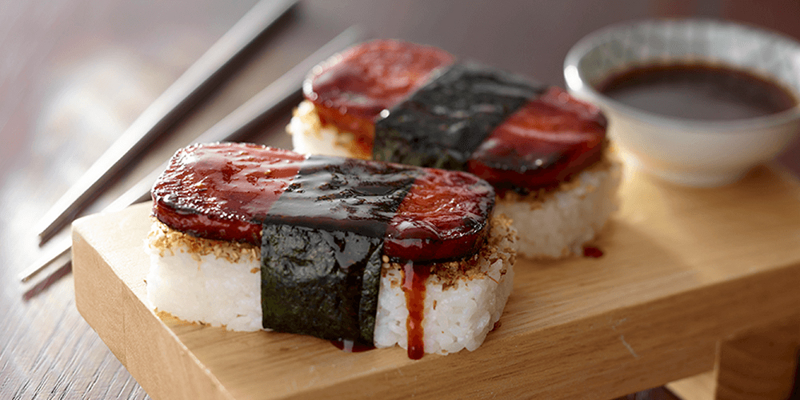

Spam Musubi Recipe

Spam Musubi is a simple and filling recipe that needs about 4 simple things.
Ingredients needed:
- Spam (as the name implies)
- White rice
- Nori sheet
- Some form of sauce (I use teriyaki)
- Not needed but suggested: Musubi press (You can also use your leftover spam can!)
How to make:
- Make some rice! I'm gonna assume you know how to already do this.
- Now what you want to do is slice your Spam into slices like the image above.
- Use medium heat on your skillet, and throw your slices on until they're nice and crispy.
- After you crisp both sides of the Spam, add your Teriyaki sauce.
- Let them get nice and coated and then turn off the heat.
- Next we line some plastic wrap into our Musubi press.
- Finally start to layer your rice into the press, after that add a slice of spam!
- Add one more layer of rice, and press the layered mixture together.
- Finally, cut your nori into strips long enough to wrap around your Musubi.
- After you wrap them, your Musubi is ready to eat.
With one just one can of spam you could probably make about 4 Musubi. That leaves you leftovers or some to share!
Hope you enjoy your sweet, savory, and salty snack!